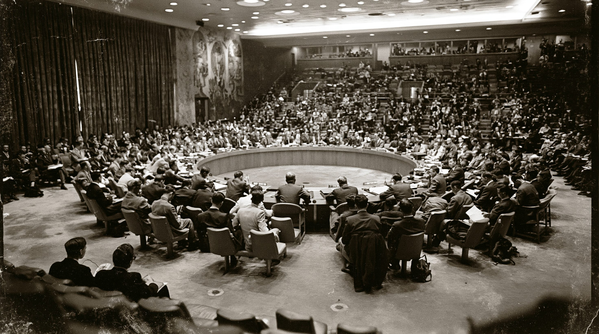
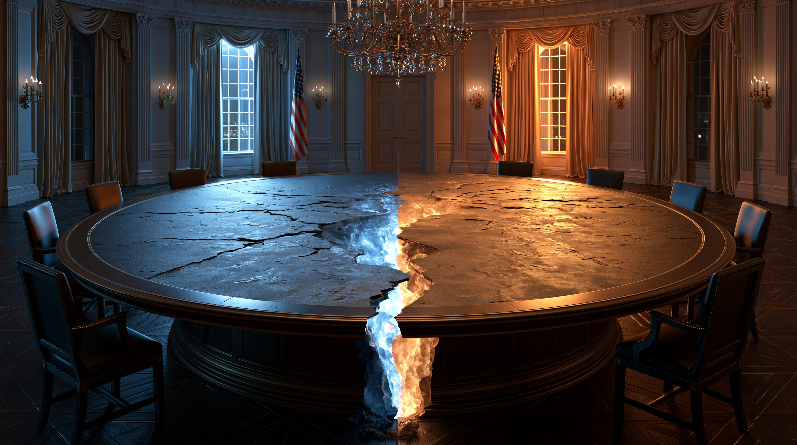
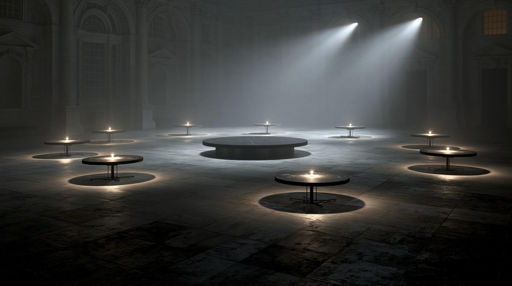

01核心と問い — 欠陥か、設計どおりか
国際連合（国連）は1945年、第二次世界大戦の惨禍を二度と繰り返さないために生まれた。その中核が、国際の平和と安全に第一の責任を負う安全保障理事会（安保理）だ。総会が193の全加盟国による「議論の場」だとすれば、安保理は制裁や武力行使を法的拘束力をもって決められる「執行の場」である。だが、その執行力の鍵を握るのが、第二次大戦の戦勝国であるアメリカ・イギリス・フランス・ロシア（旧ソ連）・中国の5常任理事国に与えられた「拒否権」だ。この5カ国のうち1カ国でも反対すれば、ほかの14カ国がいかに賛成しても、決議は成立しない。
この設計には明確な思想があった。大国を強制的に従わせようとすれば、大国同士の戦争になる——その教訓から、「大国が一致しないことは、そもそも実行しない」という安全装置を組み込んだのだ。だから安保理の麻痺は、ある意味で意図された結果でもある。問題は、その装置が今、ガザやウクライナのように大国自身が当事者となる危機の前で、責任回避の道具として使われていることだ。本記事は、この機能不全を3つの構造から捉える。
安保理は15カ国で構成され、うち5カ国（アメリカ・イギリス・フランス・ロシア・中国）が任期のない「常任理事国」、残り10カ国が地域ごとに選ばれる任期2年の「非常任理事国」だ。重要事項の決議には9カ国以上の賛成が必要だが、常任理事国が1カ国でも反対票を投じると、その時点で否決される。これが拒否権で、常任理事国だけに与えられた特権である。手続き事項には適用されない。
02タイムライン — 機能と麻痺の80年
国連創設 — 戦勝国による設計
第二次大戦の戦勝5カ国が常任理事国となり、拒否権を確保した。「大国の一致なくして強制なし」という思想のもと、安保理は国際秩序の執行機関として出発した。原加盟国は51カ国。
拒否権の応酬と長期麻痺
米ソ対立が安保理に直接持ち込まれ、拒否権が乱発された。とくに初期はソ連が、後年はアメリカがイスラエル関連で多用。重大な危機ほど安保理は動けず、「冷戦の人質」と呼ばれた。
湾岸戦争 — 機能した稀な瞬間
イラクのクウェート侵攻に対し、安保理は決議678で「あらゆる手段」の行使を承認した。冷戦終結で米ソが協調し、多国籍軍が組織された。安保理が設計どおりに機能した、数少ない成功例とされる。
イラク戦争 — 安保理を迂回した大国
アメリカとイギリスは、武力行使を明示的に認める新決議を得られないまま、イラクに侵攻した。アナン事務総長は後に「国連憲章に反する」と述べた。大国が安保理を「通さない」道を選べることが露呈した。
シリア・クリミア — 拒否権の常態化
シリア内戦ではロシアと中国が繰り返し拒否権を行使し、人道決議を阻んだ。2014年のクリミア併合、2022年のウクライナ侵攻では、ロシアが当事者でありながら自国への非難決議を拒否。「裁判官を兼ねる被告」の構図が際立った。
ガザ — 沈黙する安保理
ガザ危機をめぐり、アメリカが停戦決議を繰り返し拒否。2025年6月には14カ国が賛成する停戦決議をアメリカ1カ国の拒否権で否決した。2024年の拒否権による否決は7件と1986年以来最多を記録し、安保理の麻痺が改めて可視化された。

036つの視点
| 立場 | 基本スタンス | 最大の主張 | 課題・矛盾 |
|---|---|---|---|
| 拒否権擁護（常任5カ国） | 現状維持 | 麻痺は秩序の安全弁 | 特権防衛との区別が曖昧 |
| 改革推進派（日独印伯） | 議席拡大 | 1945年の構造は古い | 憲章改正に5カ国の壁 |
| グローバルサウス | 不正義の是正 | アフリカに常任議席を | 大国の同意を得にくい |
| 国連擁護・人道機関 | 不完全でも維持 | 安保理＝国連ではない | 政治的麻痺は解けない |
| 現実主義・懐疑論 | 過大評価を戒める | 力の現実を映す鏡 | 代替案を示さない |
| 小さな多国間主義 | 国連の外で動く | 有志連合の機動力 | 世界の分断を招く |

04データ・統計
常任理事国別の拒否権行使回数（1946年〜）
ソ連／ロシアが最多、次いでアメリカ。イギリス・フランスは1989年以降は不行使。数値は集計時点で前後する概数。出典：国連、Council on Foreign Relations（2025年8月時点）
時代別の拒否権行使回数の趨勢（概数）
冷戦期に多発し、冷戦終結直後（1996〜2005年）に激減、2011年以降ふたたび増加——「協調」と「対立」の波が読み取れる。各時代の値は趨勢を示す概数。出典：国連 Dag Hammarskjöld Library、Security Council Report
注目の数字
近年の主要な拒否権事例
| 時期 | 議題 | 拒否した国 |
|---|---|---|
| 2011〜20年 | シリア内戦の人道決議 | ロシア・中国（複数回） |
| 2022年 | ウクライナ侵攻の非難決議 | ロシア（当事国） |
| 2024年 | ガザ停戦決議（複数） | アメリカ／ロシア・中国 |
| 2025年6月 | ガザ恒久停戦決議（14対1） | アメリカ |
大国が当事者・後ろ盾となる危機ほど、拒否権で決議が葬られる傾向が鮮明だ。
05深掘り — 「死」の先にあるもの
